カレンダーのリズムに合わせた支払い管理。
請求書やサブスクリプションを計画し、リマインダーを設定し、月間の明確な概要を維持します。データはデバイスに保存されます。
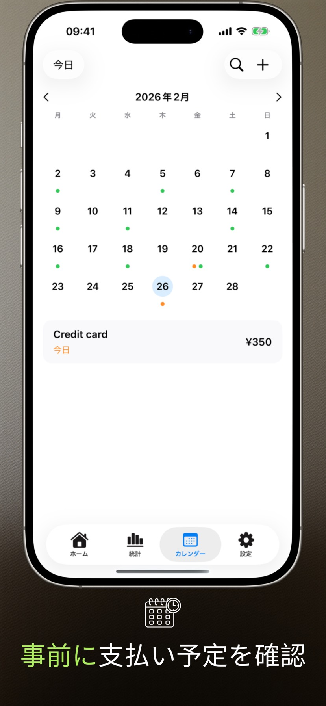
バージョン2.3.1の新機能
- ウィジェットの動作を改善しました。
- お支払いリストがMacで正しく表示されるようになりました。
アプリの画面
iPhone と iPad の6つの主要画面で、Payment Calendar の計画リズムを紹介します。
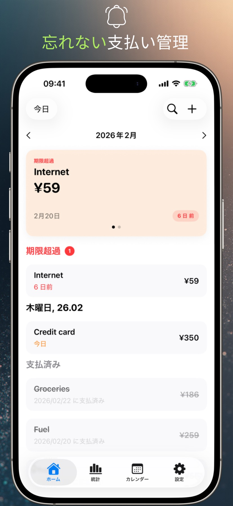
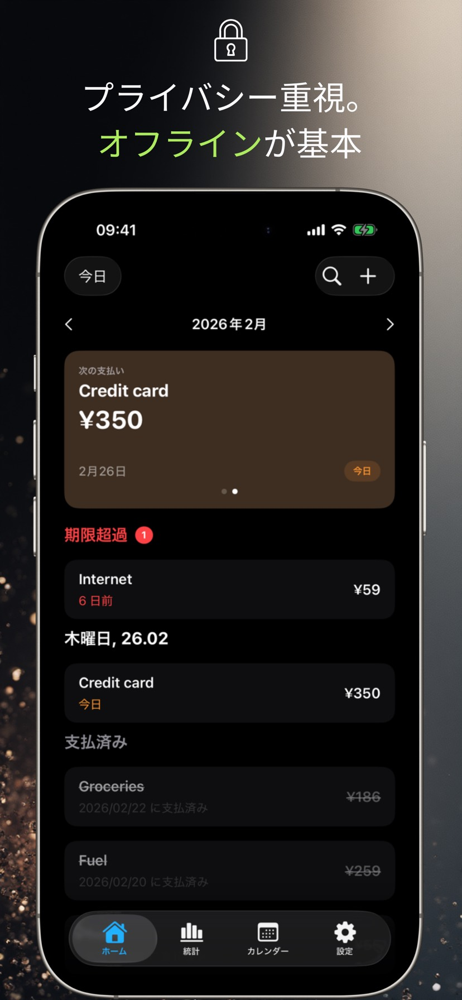
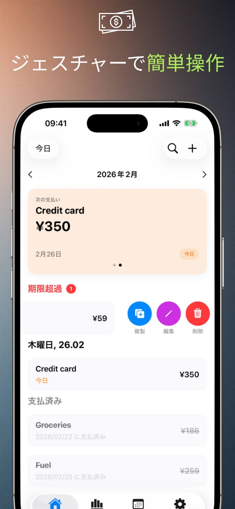
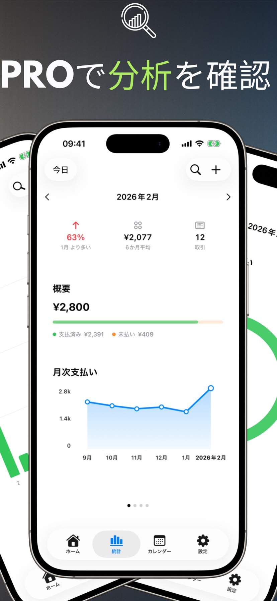
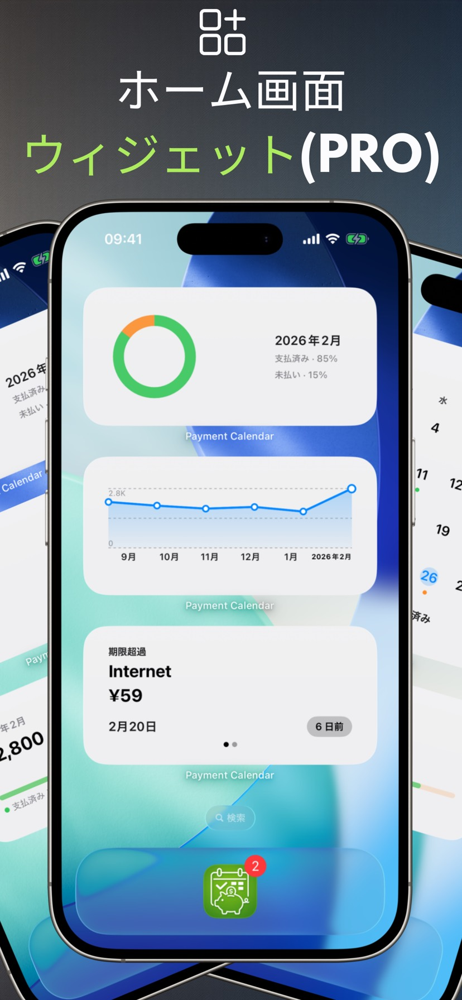
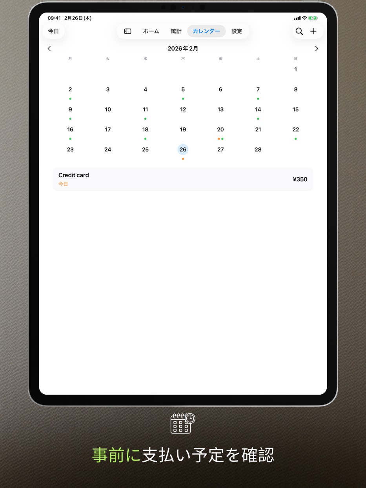
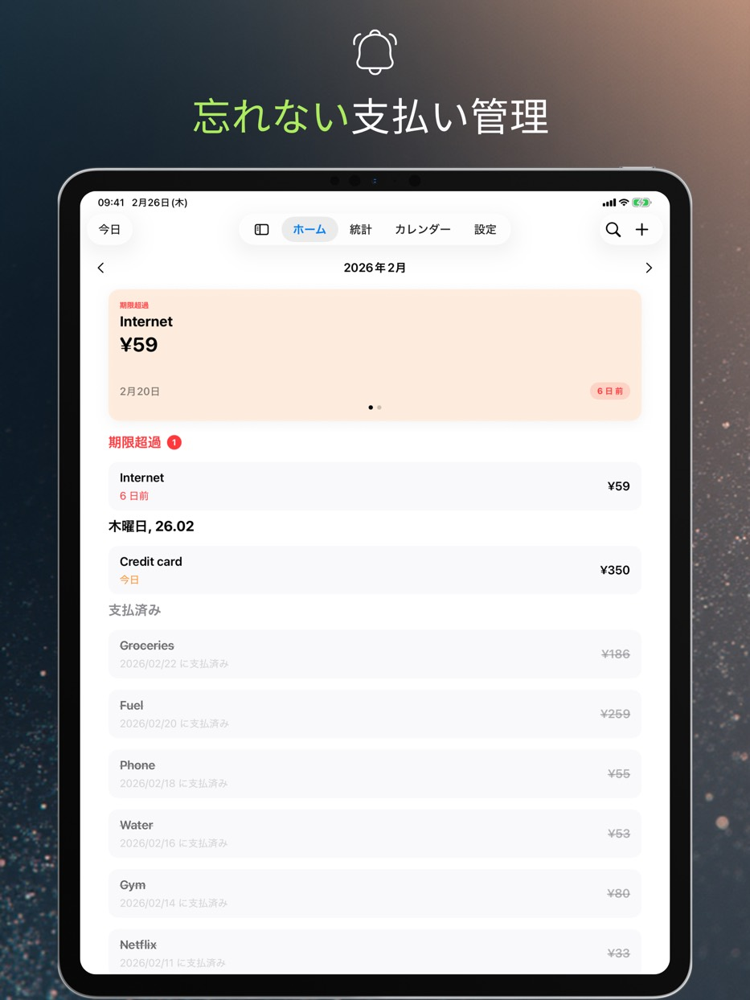
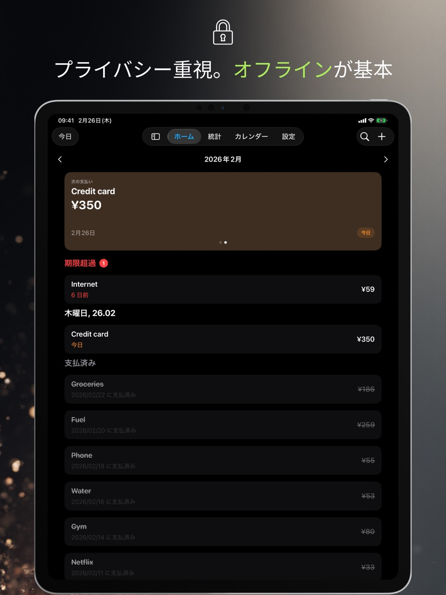
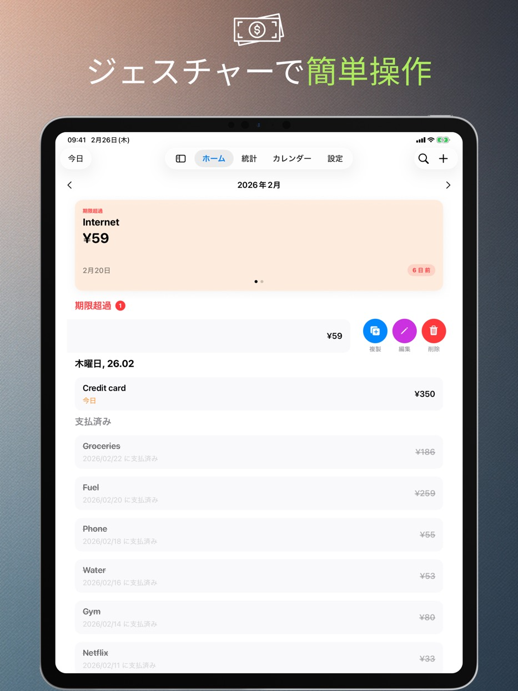
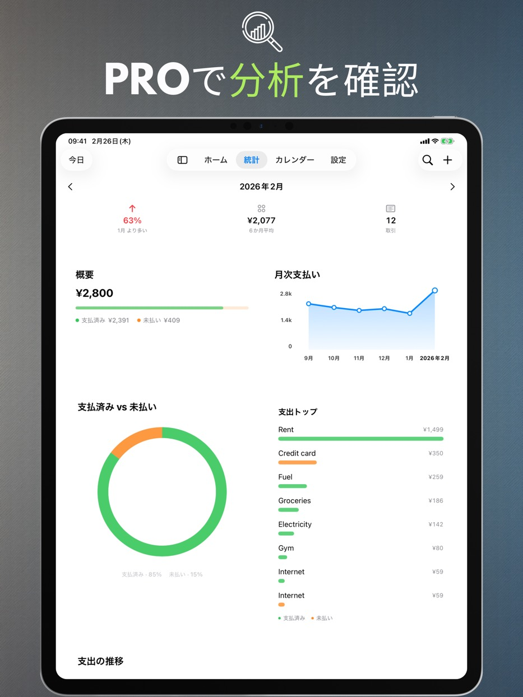
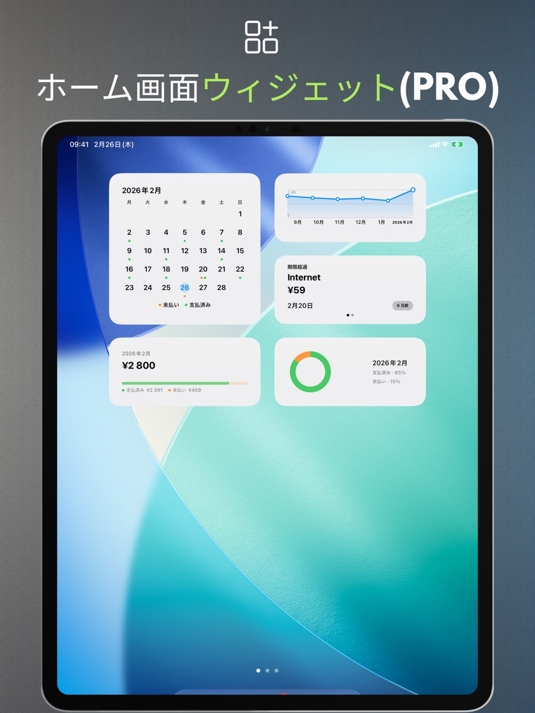
アプリの機能
以下の機能はすべて無料で、アカウント登録も不要です。見やすい月表示、支払いのすばやい登録、そして落ち着いて支出を計画できるリマインダー。
支払いカレンダー
今後の期日と支払いリストを一か所で確認できます。
リマインダー
期日当日または数日前に通知を受け取ります。
ジェスチャーと素早い操作
スワイプで支払い済みにマーク、編集、または複製できます。
検索
名前、金額、メモで支払いを検索できます。
個人設定
通貨、週の開始日、デザイン、あなたに合ったレイアウト。
iPad対応
ウインドウ表示とSplit Viewに加えて、キーボードとキーボードショートカットにも対応。
ゴミ箱
削除した支払いはゴミ箱に30日間残り、いつでも復元できます。
アクセシビリティ
システムの文字サイズに合わせて拡大し、「視差効果を減らす」に対応。支払い状況を色だけで示すことはありません。
プライバシー
データはデバイスに保存されます。
Payment Calendarはアカウントを必要とせず、あなたの活動を追跡しません。iCloud同期はオプションで、デフォルトでは無効になっています。
広告なし、分析なし
分析や広告のためのサードパーティSDKは使用していません。
データのコントロール
アプリ内でいつでもデータを削除、または削除して消去できます。
PRO機能
有料の拡張機能：統計、ウィジェット、繰り返しの支払い、同期、書き出し。月額・年額のサブスクリプション、または買い切りから選べます。
統計とトレンド
月次サマリーと6か月のトレンド表示。
ウィジェット
ホーム画面ウィジェットは4種類：次の支払い、月次サマリー、トレンド、月間カレンダー。
定期支払い
定期的な支払いを自動的に作成します。
iCloud同期
有効にすると、デバイス間でデータを同期します。
CSV/PDFエクスポート
概要を共有したり、データをアーカイブしたりできます。
対応言語
Payment Calendarは、ポーランド語、英語、スペイン語、ドイツ語、フランス語、イタリア語、ウクライナ語、スウェーデン語、簡体字中国語、日本語、ポルトガル語（ブラジル）をサポートしています。
よくある質問（FAQ）
Payment Calendar に関するよくある質問への回答をまとめました。
ダウンロード前に
請求書の支払いを忘れないためにはどうすればいいですか？
Payment Calendar は月表示ですべての支払い予定を確認でき、期日前にリマインダーを送信するため、何をいつ支払う必要があるか事前に把握できます。
不要なサブスクリプションに料金を払わないよう管理するにはどうすればいいですか？
サブスクリプションを定期支払い（PRO機能）として登録すると、更新のたびに自動でリマインダーが届くため、使っていないサービスに気づいて解約しやすくなります。
カレンダーのように請求書や支払いを管理できるアプリはありますか？
はい、それがまさに Payment Calendar のコンセプトです。月表示にはイベントの代わりに支払いが表示され、支払い済みか期日が近いかがひと目でわかります。
アカウントを作らずに支払いを管理するにはどうすればいいですか？
Payment Calendar は登録やログインが不要です。インストールしてすぐに支払いを追加できます。iCloud 同期を自分で有効にしない限り、データは端末内にのみ保存されます。
Payment Calendar は通常のカレンダーアプリと何が違いますか？
通常のカレンダーはイベントを表示するもので、支払いには対応していません。「支払い済み／未払い」のステータスや、請求書に合わせたリマインダー、支出の可視化機能もありません。Payment Calendar は支払いのために設計されており、金額、通貨、定期性、そして毎月実際にいくら使っているかを示す統計まで確認できます。
基本情報
Payment Calendar とはどんなアプリですか？
Payment Calendar は、iPhone と iPad（iOS/iPadOS）向けの請求・支払い管理アプリです。カレンダー形式で支払い予定を確認でき、支払い済みの管理もすばやく行えます。
アプリはオフラインで使えますか？
はい。アプリはオフラインで動作し、アカウントやインターネット接続は不要です。データは端末内に保存されます。iCloud 同期（PRO 版、任意）を有効にすると、複数の Apple デバイスで利用できます。
Payment Calendar はどの端末で使えますか？
iOS/iPadOS 18.0以降のiPhoneとiPadで動作します。Appleシリコン搭載のMacにインストールすることもでき、その場合はmacOS専用版ではなくiPadアプリ（「Designed for iPad」）として動作します。
プライバシーとデータ
私の金融データは安全ですか？
はい。Payment Calendar はユーザーデータを収集せず、ログインも不要です。データは端末内に保持され、iCloud 同期（PRO 版、任意）も Apple のエコシステム内で行われます。
Payment Calendar は銀行口座と連携しますか？
いいえ。Payment Calendar は銀行と連携したり、取引情報を自動取得したりすることはありません。支払いはご自身で手入力します。これは意図的な設計です。アプリはプライバシーを最優先しており、機能するために銀行口座へのアクセスを必要としません。
機能
定期的な支払いやサブスクリプションを追加できますか？
はい。サブスクリプションや毎月の請求など、定期的な支払いを追加できます。この機能は PRO 版で利用できます。
支払い期限前のリマインダーは届きますか？
はい。リマインダーを設定して、支払いの見逃しを防げます。
Payment Calendar はどの通貨に対応していますか？
22通貨に対応しています。米ドル、ユーロ、ポンド、スイスフラン、チェコ・スウェーデン・ノルウェー・デンマークの各クローナ、フォリント、フリヴニャ、円、人民元、レアルのほか、コロンビアペソ、モンゴルトゥグルグ、メキシコペソ、チリペソ、ニュージーランドドルなど。表示形式（記号、区切り、丸め）はお使いの端末の地域に合わせて自動的に調整されます。
支払いデータをエクスポートできますか？
はい、PRO版で可能です。レポート作成やアーカイブのために、データをCSVまたはPDFファイルとしてエクスポートできます。
実際に支払った日付を修正できますか？
はい。支払い済み項目の編集フォームに「支払い日」フィールドがあり、実際に支払った日付を設定できます。統計は引き続き支払い日ではなく期日で集計されます。
ホーム画面用のウィジェットはありますか？
はい、PRO版で利用できます。ホーム画面ウィジェットは4種類から選べます：次の支払い、月次サマリー、支出トレンド、月間カレンダー。いずれもアプリを開かずに確認できます。
誤って支払いを削除してしまいました。元に戻せますか？
はい。削除した支払いはゴミ箱に入り、30日間保管されます。ゴミ箱は設定の中にあり、復元はワンタップです。
Payment Calendar は家計簿アプリですか？
いいえ。これは請求管理用カレンダーで、今後の支払いと支払い済み項目を追跡するためのアプリです。収入管理、口座残高管理、予算管理には対応していません。
同期と対応言語
iPhoneとiPadの間でデータは同期されますか？
はい、任意のiCloud同期（PRO機能）を有効にすると、同じiCloudアカウントでサインインしたすべてのAppleデバイスで支払いデータを利用できます。この機能を有効にしない場合、データは1台の端末内にのみ保存されます。
アプリはどの言語に対応していますか？
Payment Calendar は、ポーランド語、英語、スペイン語、ドイツ語、フランス語、イタリア語、ウクライナ語、スウェーデン語、簡体字中国語、日本語、ポルトガル語（ブラジル）の11言語に対応しています。
対応プラットフォーム
Payment Calendar はAndroidで利用できますか？
ありません。Payment CalendarはiPhoneとiPad向けのアプリ（iOS/iPadOS）です。AppleシリコンのMacでは「Designed for iPad」モードで動作します。Android版はありません。
Apple Watch版はありますか？
まだご用意はありませんが、watchOS対応は今後の開発計画に含まれています。
料金とPRO版
有料サブスクリプションなしでも使えますか？
はい。基本機能は無料で利用できます。定期支払いや iCloud 同期などの PRO 機能は、サブスクリプションまたは買い切り購入が必要です。
PRO版の料金はいくらですか？サブスクリプションは解約できますか？
料金は地域によって異なり、アプリ内およびApp Storeでご確認いただけます。月額、年額、または買い切り（Lifetime）からお選びいただけます。サブスクリプションは、他のApp Store内サブスクリプションと同様に、Apple IDの設定から管理・解約できます。
サポート
対応してほしい通貨や、新機能のアイデアがある場合はどうすればいいですか？
payment_calendar@icloud.com までご連絡ください。すべてのメールに目を通し、私自身が返信しています。ユーザーの皆さまからのご要望やアイデアは、実際に今後のバージョンに反映されています。